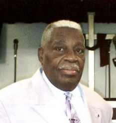
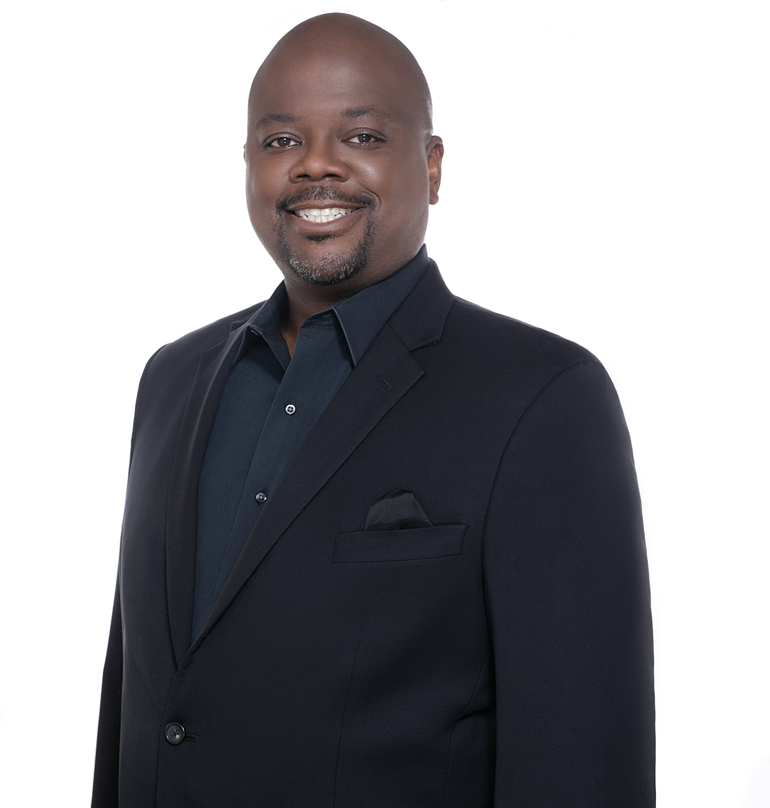

New Zion has been guided by faithful leadership since 1983 — each pastor building on the foundation laid before them.

Founder and first Senior Pastor of New Zion Baptist Church. For over three decades he shepherded this congregation with wisdom, determination, and a servant's heart.
Read His StoryA mighty woman of God whose desire has always been that people know God's Word in their minds, store it in their hearts, and demonstrate it to the world.
Read Her Story
Currently serving as Assistant Pastor and Wednesday Bible Study teacher, Rev. Parker and his wife Tanaia joined New Zion as members before answering the call to pastoral ministry here.
Read His StoryFrom a school cafeteria in 1983 to the sanctuary on Call Place SE today — walk through the full history of New Zion, pastor by pastor.
Our History